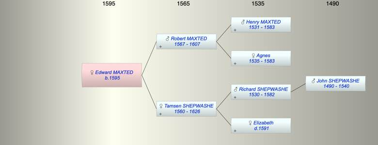

| [Index] |
| Edward MAXTED (1595 - ) |
|  |
| b. 1595 at Chilham |
| Parents: |
| Robert MAXTED (1567 - 1607) |
| Tamsen SHEPWASHE (1560 - 1626) |
| Siblings (5): |
| Elizabeth MAXTED (1587 - ) |
| Mary MAXTED (1589 - ) |
| Thomazine MAXTED (1592 - ) |
| Thomas MAXTED (1599 - ) |
| Robert MAXTED (1602 - ) |
| Events in Edward MAXTED (1595 - )'s life | |||||
| Date | Age | Event | Place | Notes | Src |
| 1595 | Edward MAXTED was born | Chilham | bap 30 Nov 1595 | ||
| 1607 | 12 | Death of father Robert MAXTED (aged 40) | St Laurence | ex date of his Will | |
| 1626 | 31 | Death of mother Tamsen SHEPWASHE (aged 66) | |||
| Created on a Mac™ using iFamily for Mac™ on 8 Oct 2023 |